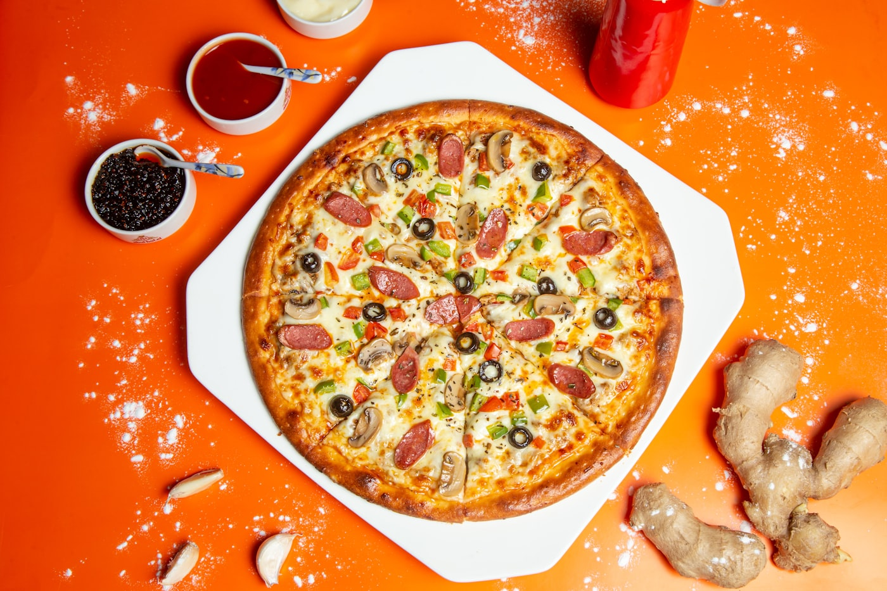

Pizza artesanal assada na hora, pratos caseiros e o clima de um quintal de verdade — em Ouro Preto do Oeste, com aquele gosto de comida de família.
Pizza artesanal assada na hora, pratos caseiros e o clima de um quintal de verdade — em Ouro Preto do Oeste, com aquele gosto de comida de família.
Como trabalhamos
Fermentação lenta e assada na hora, leve e crocante na medida.
Recheio generoso, mussarela de qualidade e sabor de comida caseira.
Grande (12 fatias), média (8) e pequena (6) — do casal à turma toda.
Mesas ao ar livre, luzes penduradas e aquele tempo de ficar sem pressa.

"Comida boa é a que se come sem pressa, entre amigos."
O que sai da cozinha

Nossa história
O Quintal nasceu da vontade de receber as pessoas como se recebe em casa: no quintal, com boa comida e tempo de sobra.
Mesas ao ar livre, luzes amarelas penduradas entre as árvores e aquele clima de quintal de família — feito pra ficar, comer bem e não ter pressa.
Almoço de segunda a sábado, das 11h às 14h. Jantar de terça a domingo, das 18h às 23h.
Como chegar
Ouro Preto do Oeste — RO
Almoço: seg–sáb, 11h–14h
Jantar: ter–dom, 18h–23h
Abrir no Google Maps